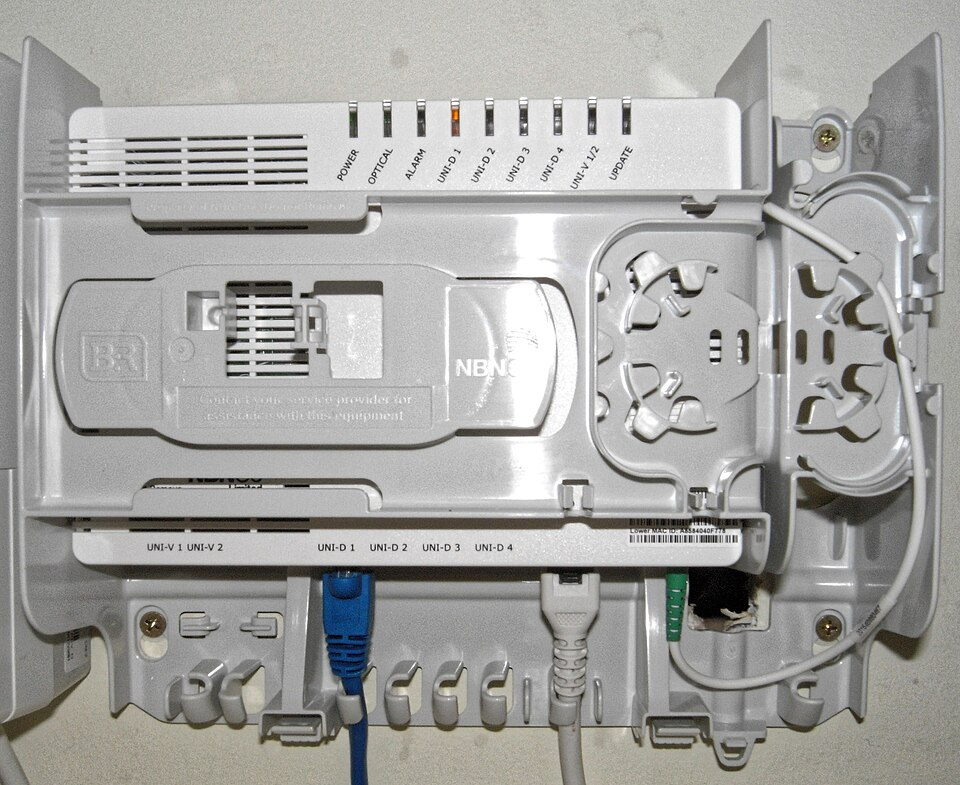
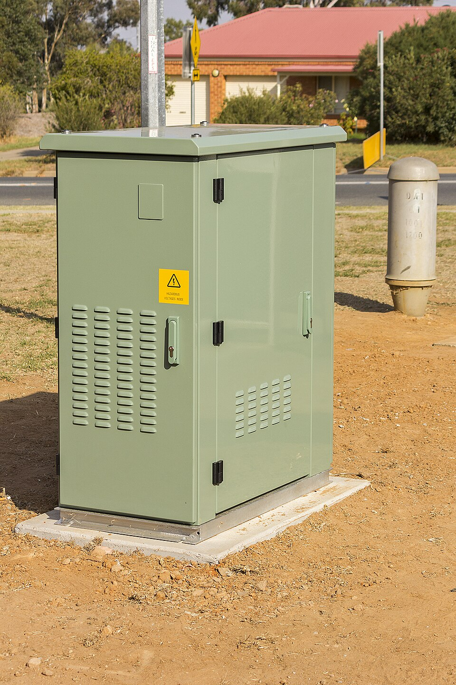

Find where an NBN broadband service stops
Use the connection box, router, wired test and outage record to decide which team owns the next check.
Follow the connection from the street to the customer’s device
For fibre to the premises, trace carrier fibre → nbn connection box → enabled Ethernet data port → retail provider’s router WAN port → home Ethernet or Wi-Fi. The connection box terminates the carrier service. The router shares it with the home. A Wi-Fi connection to the router can work when the internet service is down. On a new FTTP model, use the Port indicator. On a legacy multi-port model, record the provisioned UNI-D port from the provider’s instructions.

Photo by Pez098, resized with callouts. Original photo · CC BY-SA 4.0.


Photo by Bidgee, resized. Original photo · CC BY-SA 3.0 AU.

See the FTTP ports before the lab. The current one-port model groups indicators differently. nbn one-port photo and guide.
Watch an nbn field installation. Identify which boxes are outside and inside and where the customer router connects. Open the guide for the exact one- or four-port model to locate power, optical and data indicators. nbn FTTP installation video · nbn connection-box models and indicator guides.
Practise three independent checks with a spare router
Use a router you own and one Ethernet-connected laptop. An old spare router can run this lab with its WAN disconnected. Read the laptop’s address and default gateway with
ipconfigon Windows,ip routeon Linux or the network settings on macOS. Ping the listed gateway if your router answers ICMP, or open the local router page without changing settings. Record whether the local path works.Disconnect the WAN lead on the spare router, if one was connected, and repeat. The wired client can still reach the home gateway. The router’s WAN reports link down. This is different from a failure of the customer’s device to get a local address. Restore the original cable routing when finished.
With the router WAN already disconnected, unplug or disable the laptop’s wired connection. Confirm the wired adapter is disconnected and check that another network connection cannot mask the result. Take a second worksheet card from below and decide which observation you’d ask the customer for next.
| Intake observation | Next check | Escalation evidence |
|---|---|---|
| Only a bedroom Wi-Fi device drops | Compare two devices, then test the wired path. | Wired pass and a reproducible location point to a local wireless issue. |
| Power on, optical alarm on the specified model | Record exact indicators and check the provider’s outage status. | Report service, time, box model and observed loss. No need to touch the fibre. |
| Optical appears normal, WAN no link | Check the approved data port, Ethernet lead and router WAN socket. | Healthy optical indication cannot prove WAN addressing or service activation. |
| WAN link up, several devices fail | Check the provider’s outage, router WAN session state, then compare name lookup and a known authorised service. | Provide results for DHCP or PPPoE as applicable. Redact the account, any credentials and public-facing identifiers. |
For an actual outage, the retail provider manages the customer case and escalates network work to nbn when applicable. Record existing lights before a provider-authorised restart. Preserve medical and emergency communications arrangements. Leave the installed fibre connector, coax and carrier enclosure in place. nbn outage information · C21 Melbourne telecom job routes.